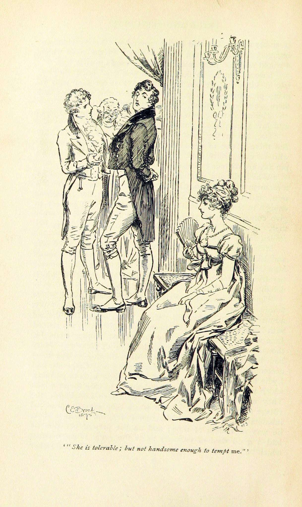
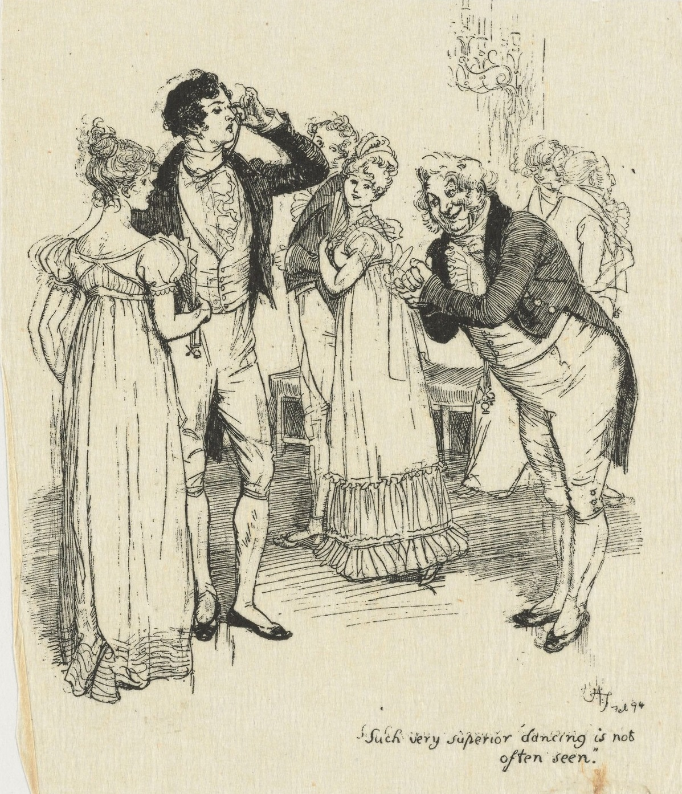
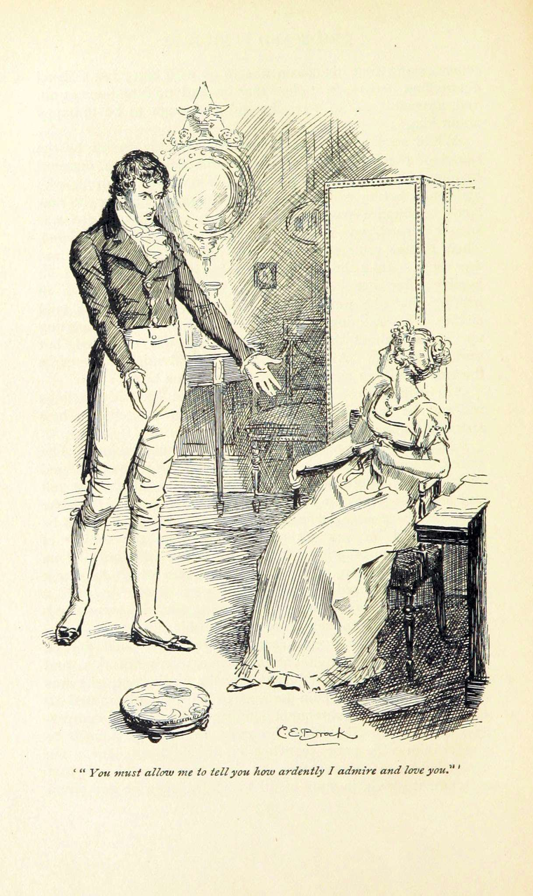
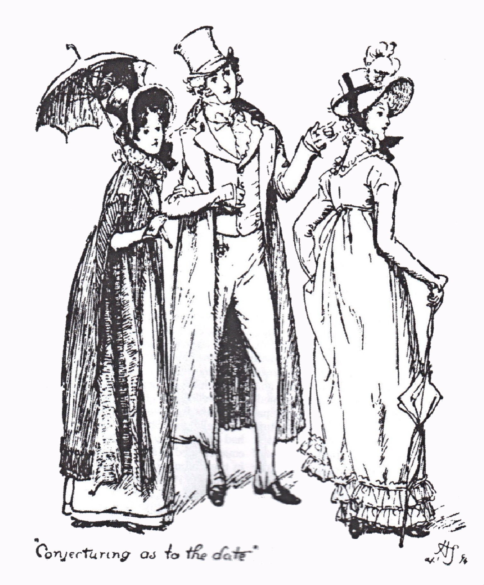
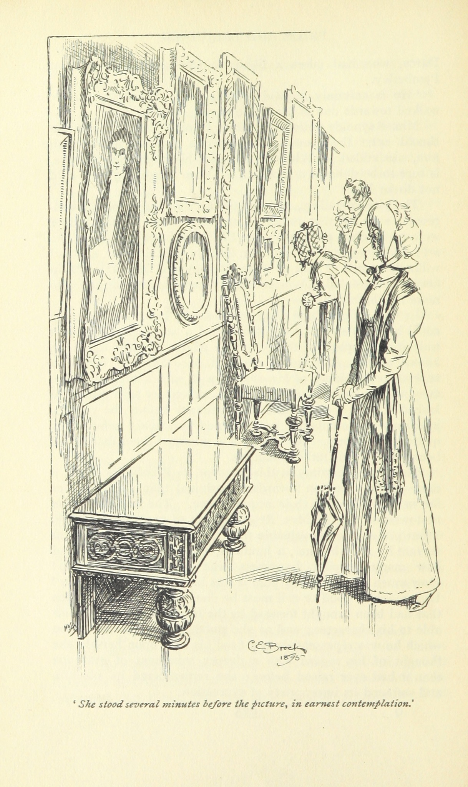

I. First Impressions
The novel opens with one of literature's most famous first sentences, delivered deadpan by a narrator who knows exactly what she is doing: Mrs Bennet has just learned that a wealthy young man named Bingley has taken Netherfield Park, the grand estate nearby. She knows what this means. Her husband is less enthused.
"It is a truth universally acknowledged, that a single man in possession of a good fortune, must be in want of a wife."
— Opening line, Chapter 1The irony is structural. Austen is not making an observation about wealthy men. She is making one about the world that watches them — a world in which women without money have marriage as their only credible strategy for survival. The sentence mocks and explains the entire novel in fifteen words.

At the Meryton assembly ball, Bingley dances twice with Jane Bennet, the eldest and most beautiful of the five Bennet daughters. His friend, Fitzwilliam Darcy, stands apart from the dancing. Darcy is richer, better-born, and considerably less charming about it. When Bingley tries to coax him toward Elizabeth Bennet, the second daughter, Darcy surveys her and declines.
"She is tolerable, but not handsome enough to tempt me."
— Darcy to Bingley, within Elizabeth's hearingElizabeth overhears it. She laughs and repeats the remark to her friends. The laugh is real, but so is the sting — and Darcy has just formed, within minutes of their first meeting, the exact prejudice he will spend hundreds of pages dismantling. Her first impression of him is sealed.
The Marriage Economy
Austen establishes the stakes with elegant efficiency: the Bennet girls must marry well, or face genteel poverty when their father dies and the estate passes to a male heir. This is not melodrama — it was plain economic reality for women of the period. The comedy of Mrs Bennet's matchmaking anxiety is inseparable from its underlying desperation. Darcy's insult, meanwhile, tells us everything about his pride before his character has had any chance to show itself.
II. Complications
The society between Netherfield and Longbourn thickens with new arrivals. A regiment of militia settles in Meryton, bringing officers in red coats and an instant improvement in the spirits of younger Bennets. Among them is George Wickham — handsome, easy-mannered, and possessed of a talent for making everyone feel they have known him for years.
Wickham singles out Elizabeth. On a walk through Meryton, he notices her reaction when Darcy rides past — the two men exchange a glance of unmistakable coldness — and he seizes the moment. Over the course of a long private conversation, Wickham paints Darcy as a proud, cold schemer who cheated him out of a living promised by Darcy's own father. The story is plausible, elegantly told, and almost entirely false. Elizabeth believes every word. She finds it perfectly consistent with everything she has already decided about Darcy.

Meanwhile, a cousin arrives at Longbourn. Mr Collins is the male heir who will inherit the Bennet estate, and he has come to choose one of the daughters as his wife — a gesture he presents to himself as magnanimous. His proposal to Elizabeth is a masterpiece of oblivious self-importance. He lists her family's financial disadvantages, his own superior situation, and the honour he is bestowing, all in one breath.
"You could not make me happy, and I am convinced that I am the last woman in the world who could make you happy."
— Elizabeth to Mr CollinsCollins does not believe her. Mrs Bennet wails. Mr Bennet, whose dry amusement is the novel's other great comedy engine, delivers his verdict to Elizabeth with characteristic precision:
"An unhappy alternative is before you, Elizabeth. From this day you must be a stranger to one of your parents. Your mother will never see you again if you do not marry Mr Collins, and I will never see you again if you do."
— Mr Bennet to ElizabethCollins promptly pivots to Charlotte Lucas, Elizabeth's closest friend, who accepts him within three days. Elizabeth is dismayed. Charlotte is pragmatic: she is twenty-seven, not beautiful, not wealthy, and this is what security looks like. Jane, meanwhile, is quietly devastated when Bingley abruptly leaves Netherfield for London and does not return. Elizabeth watches her sister's unhappiness, suspects Darcy's influence, and her distrust of him calcifies further.
Prejudice Takes Root
Wickham's fabrication works because Elizabeth is primed to believe it. She has already judged Darcy proud and cold; a story confirming that judgement slides in effortlessly. Austen is precise about this mechanism: prejudice does not require malice, only a prior conviction and a charming source. Charlotte's marriage to Collins is the chapter's counterweight — a cold-eyed calculation that Elizabeth finds almost unbearable, yet Austen refuses to condemn it outright.
III. The First Proposal
Elizabeth travels to visit Charlotte, now installed as mistress of Collins's parsonage in Kent. It is a comfortable, slightly suffocating domestic arrangement, and Charlotte manages it with brisk competence. The nearby estate of Rosings Park is home to Lady Catherine de Bourgh, Darcy's formidable aunt, who dispenses opinions on everything from music to child-rearing with the authority of someone who has never been contradicted.
Darcy arrives at Rosings. He calls at the parsonage, often and without obvious reason. Then one afternoon, without warning, he proposes.
"In vain I have struggled. It will not do. My feelings will not be repressed. You must allow me to tell you how ardently I admire and love you."
— Darcy, first proposalThe declaration is genuine. It is also a catastrophe of delivery. Darcy cannot stop himself dwelling on how unsuitable Elizabeth is — her family's inferiority, his own better judgement overcome against his will. He offers love and insult in the same speech, apparently unaware that a proposal should perhaps not catalogue the proposer's reluctance at length.

Elizabeth's refusal is equally unsparing. She does not soften it.
"I might as well enquire why, with so evident a design of offending and insulting me, you chose to tell me that you liked me against your will, against your reason, and even against your character?"
— Elizabeth, refusing DarcyShe also names his crimes: his role in separating Jane and Bingley, his treatment of Wickham. Darcy leaves. The next morning, he delivers a long letter. Elizabeth reads it expecting further arrogance. What she finds instead is a detailed, documented refutation of everything she believed. Wickham is exposed as a schemer who attempted to elope with Darcy's young sister for her fortune. The Bingley separation was real, but motivated partly by genuine doubts and partly by a wish to protect his friend from the Bennet family's embarrassing behaviour — a case Darcy makes without malice, which is almost worse.
"I, who have prided myself on my discernment! — I, who have valued myself on my abilities! How humiliating is this discovery!"
— Elizabeth, on reading Darcy's letterElizabeth reads the letter twice. Then again. Each reading dismantles a conviction she had held with absolute confidence. The prejudice she had aimed so precisely at Darcy turns back on herself.
The Letter as Mirror
Darcy's proposal is the novel's structural hinge: before it, both protagonists are wrong; after it, both begin the slow work of being right. His letter is not a love letter — it is a legal brief, passionless and precise, which makes its effect on Elizabeth all the more devastating. Austen understands that pride is not cured by warmth but by evidence. Elizabeth's self-reproach here is the moral centre of the book: she punishes herself harder than any narrator would dare to.
IV. Pemberley
Months pass. Darcy is absent. Elizabeth returns home with a revised understanding of herself and a growing, uncomfortable appreciation of the man she refused. Then her aunt and uncle, the Gardiners, invite her on a tour of Derbyshire. Their route, by small degrees, leads to Pemberley — Darcy's country estate.
Elizabeth agrees to visit only after confirming that the family is away. Pemberley is magnificent. The house sits in natural grounds that have been shaped with taste rather than fashion — no artificial cascade, no over-sculpted shrubbery. The housekeeper, Mrs Reynolds, speaks of her master with a warmth that is clearly not performance. He has been kind to his tenants, beloved by his servants, an excellent brother. Elizabeth stands in the portrait gallery and looks at his painted face for a long time.

Then Darcy arrives. He has returned early. He finds Elizabeth in his grounds, clearly embarrassed to have been caught touring the home of the man who proposed to her. What follows is remarkable: Darcy, the cold and proud man of the first two hundred pages, is transformed. He is warm. He is solicitous. He asks to be introduced to her aunt and uncle — the Gardiners, whom he would previously have considered beneath his notice — and treats them with genuine courtesy.
Elizabeth watches all this and feels something shift irrevocably. She begins to think she may have been, in every meaningful sense, catastrophically wrong about him.
Then a letter arrives from Jane. Lydia, the youngest and most reckless Bennet sister, has run away with Wickham. They are not married. The scandal, if it cannot be contained, will destroy the reputations of every Bennet girl. Elizabeth, in a moment of anguished honesty, tells Darcy what has happened. She sees his face change — and reads it, with absolute certainty, as the end of any hope.
"You never see a fault in anybody. All the world are good and agreeable in your eyes."
— Elizabeth to JaneThe Estate as Character Witness
Pemberley functions in the novel as evidence — a great house built and maintained by a man of genuine taste and care is a kind of moral argument. Austen is not naive about this: she knows that wealth can be built badly. But she also knows that how a man treats his tenants, servants, and dependants reveals something true. The housekeeper's praise carries more weight than any social recommendation. Elizabeth understands it when she sees it — and the timing of Lydia's catastrophe, arriving just as hope consolidates, is Austen's plot at its most ruthlessly efficient.
V. Resolution
The Lydia crisis is real and the Bennet family is in chaos. Wickham has debts across Meryton and no intention of marrying without money. Negotiations are conducted through Mr Gardiner, who eventually secures the marriage by what appears to be a generous settlement — far more than the Gardiners could plausibly afford. Elizabeth suspects, and then confirms, what has happened: Darcy tracked Wickham to London, paid off his debts entirely, provided him a commission, and arranged the marriage. He did it without telling anyone. He did it, she understands slowly, for her.
Lydia, oblivious and triumphant, lets the secret slip in a careless remark. Elizabeth writes to Mr Gardiner, who confirms it. The knowledge reorders everything she feels.

There is one obstacle left. Lady Catherine de Bourgh arrives at Longbourn in a fury, having heard rumours that Darcy means to propose to Elizabeth. She demands that Elizabeth promise, on her honour, to refuse him. Lady Catherine is certain that Elizabeth, a woman of inferior birth, cannot possibly belong in Darcy's world. Elizabeth's response is calm, clear, and devastating: she owes Lady Catherine nothing, and will make no such promise.
Lady Catherine reports this exchange to Darcy — intending, presumably, to warn him off. Instead she confirms that Elizabeth has not ruled him out. Darcy returns. He walks with Elizabeth. He tells her that his character, though unchanged in its essentials, has been improved by her.
"What do I not owe you! You taught me a lesson, hard indeed at first, but most advantageous. By you I was properly humbled."
— Darcy to Elizabeth, second proposalElizabeth accepts. Bingley, finally freed of Darcy's earlier interference, proposes to Jane. Mrs Bennet's ecstasies on hearing of two engagements simultaneously are among the novel's finest comic passages. Mr Bennet, who has watched the whole affair with the detached amusement of a man who expected very little from the world, gives his blessing to both matches — and privately tells Elizabeth that Darcy is the only man he has ever thought worthy of her.
Both marriages are earned. Not by beauty or fortune, but by hard self-knowledge, revised judgement, and the willingness to be humbled by a person worth being humbled by.
Earned, Not Given
Austen refuses the easy resolution. Darcy does not simply declare his love again — he demonstrates, through a secret and costly act, that he has understood what love actually requires: sacrifice without expectation of credit. Elizabeth does not simply reconsider her feelings — she must watch evidence accumulate over months before trusting her own revised judgement. Their second proposal scene is one of the warmest in English fiction precisely because it is so unromantically honest: two intelligent people, both chastened, arriving at happiness through something harder than chemistry.
Why It Matters
First Impressions vs True Character
- Both protagonists form spectacularly wrong first impressions of each other
- Wickham's charm blinds Elizabeth; Darcy's manner blinds him to her true worth
- Intelligence intensifies elegant prejudice — it does not prevent it
- Revision, not first judgement, is the skill the novel rewards
Marriage as Economy
- For women without income, marriage was survival, not romance
- Charlotte's pragmatic choice is never condemned — Austen grants it full dignity
- Each marriage answers the same economic trap differently
- Money matters enormously; that makes the human choices within it more significant, not less
Pride and Self-Knowledge
- Both title flaws belong to both protagonists — not cleanly to one each
- Elizabeth's prejudice is a form of pride: she trusts her own discernment too much
- Darcy's pride is cured not by warmth but by evidence and humiliation
- The cure requires each to say "I was wrong" to the person who matters most
Legacy
- Over 20 million copies sold; never out of print since 1813
- Adapted into 70+ films, TV series, stage productions, and literary sequels worldwide
- The 1995 BBC series reached 10 million UK viewers per episode — a third of the population
- The antagonistic-lovers-who-belong-together template is Austen's invention, and still drives romantic comedy today
Fun Facts
- Originally titled First Impressions — Austen wrote the first draft in 1796–97, aged 20–21. It was rejected by a publisher without being read. The revised version appeared in January 1813.
- The first edition of 1,500 copies sold out within twelve months. Austen received £110 — roughly £8,000 today.
- Austen called Elizabeth Bennet "as delightful a creature as ever appeared in print" — one of the few direct statements she made about her own characters.
- The novel has been set in India, South Korea, Bollywood, and contemporary Silicon Valley — each adaptation reframing the same marriage-market anxieties in a new economy.
- Jane Austen's face appears on the £10 note — the first real woman on British paper currency since Florence Nightingale was retired in 1994.
Quotes
"It is a truth universally acknowledged, that a single man in possession of a good fortune, must be in want of a wife."
— Opening line, Chapter 1Perhaps the most famous first sentence in English fiction. Its power lies in the word "universally" — Austen does not claim this is true, she observes that society treats it as true. The irony is polite and devastating: the entire novel is a controlled explosion of the pretence packed into that single adverb.
"She is tolerable, but not handsome enough to tempt me."
— Darcy to Bingley, within Elizabeth's hearing, Chapter 3The insult that starts everything. Darcy says it casually, within earshot, without apparent concern — which tells us more about his pride than any formal introduction could. Elizabeth laughs it off. But the wound is real, and Austen knows it: this is the sentence the whole novel will spend three volumes dismantling, one humiliation at a time.
"In vain I have struggled. It will not do. My feelings will not be repressed. You must allow me to tell you how ardently I admire and love you."
— Darcy, first proposal, Chapter 34A declaration of love that doubles as a confession of reluctance. Darcy clearly loves her — and is constitutionally incapable of saying so without sounding as though he is confessing to a character flaw. The pathos is entirely real. So is the comedy. No other novelist of the period would have written a love scene this bracingly awkward.
"I, who have prided myself on my discernment! — I, who have valued myself on my abilities! How humiliating is this discovery!"
— Elizabeth, after reading Darcy's letter, Chapter 36Elizabeth does not simply admit she was wrong. She turns the full force of her intelligence on herself, locating the precise mechanism of her failure. A lesser novelist would have given her a gentler realisation. Austen gives her this: a woman who was the sharpest person in every room, undone by the very sharpness she most prized.
"My courage always rises at every attempt to intimidate me."
— Elizabeth to Lady Catherine de Bourgh, Chapter 56Elizabeth says this to the most powerful and imperious woman in her social world, who has arrived at Longbourn expressly to demand obedience. She receives none. Of all the celebrated exchanges in the novel, this is the one that most purely distils Elizabeth's character — and it lands with such force because the whole preceding novel has been quietly building toward exactly this moment.
"Think only of the past as its remembrance gives you pleasure."
— Elizabeth, final chapterThe novel's closing philosophy, offered in the very last pages on the question of how to make sense of everything that nearly went wrong. Austen does not moralize. She does not say "learn from your mistakes." She says: use the past as you need it. It is pragmatic, warm, and entirely unexpected — and it has the ring of someone who has spent three hundred pages getting things badly wrong and slowly, painfully right.
"I declare after all there is no enjoyment like reading! How much sooner one tires of any thing than of a book! — When I have a house of my own, I shall be miserable if I have not an excellent library."
— Caroline Bingley, Chapter 11Caroline is trying to catch Darcy's attention while he reads — performing bookishness at a man too absorbed in an actual book to notice. Austen gives the irony nowhere to hide: one of the novel's most sincere observations about reading is put in the mouth of a woman who does not mean a word of it. The quotation has outlasted the character who never meant it.
"Angry people are not always wise."
— Narrator, Chapter 45Five words that carry the whole novel's moral weight. Lady Catherine has just deployed every weapon of rank and fury — and accomplished nothing. Austen delivers the observation without emphasis, without irony markers, without a breath of elaboration. It is stated as plain fact, which is exactly what makes it devastating.
Quiz
Three questions on themes and ideas. Not plot recall.
1. The novel's title pairs two abstract nouns. Which character most embodies "pride" and which most embodies "prejudice" — and does Austen keep them cleanly separate?
2. Charlotte Lucas accepts Collins's proposal with full knowledge of his limitations. How does Austen treat this decision?
3. Why is Darcy's secret rescue of the Bennet family — paying Wickham's debts and arranging Lydia's marriage — more significant than a second proposal would be on its own?